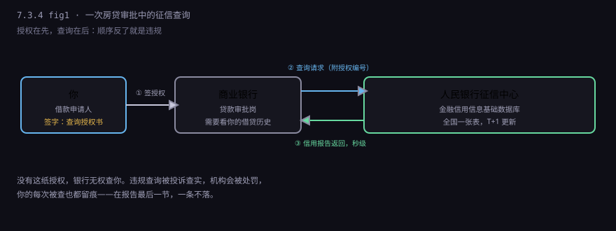
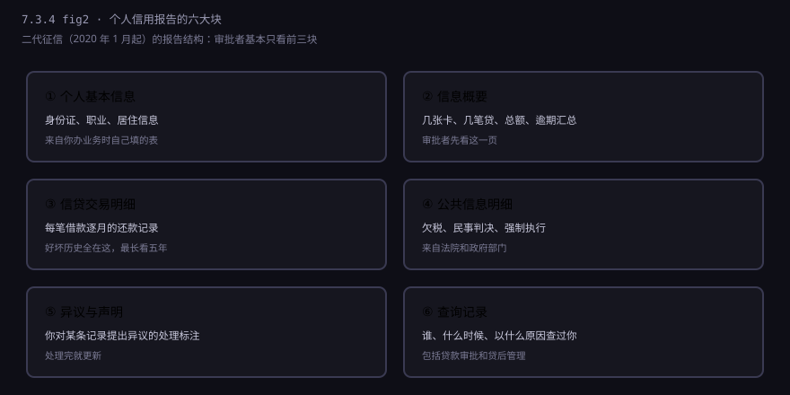
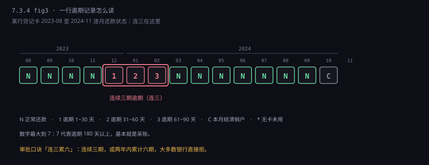
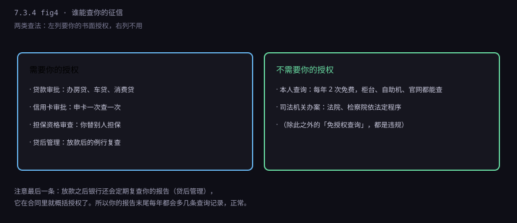
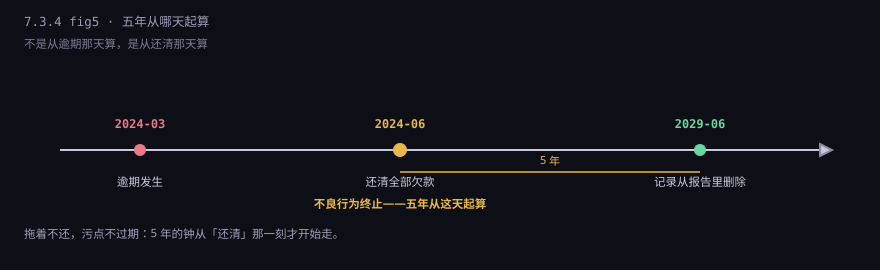
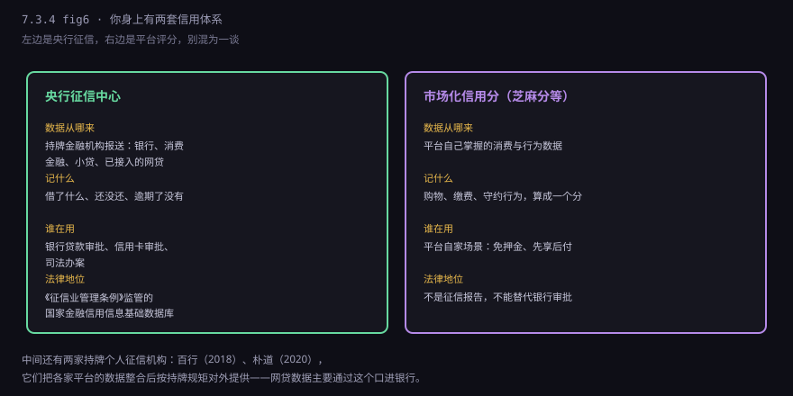

约 0.5 万字 · 6 张图 · 你签过的每一份「查询授权书」， 背后都是同一张表；表上有一行数字，决定你以后借钱贵不贵
那份授权书的措辞很硬，大意是：本人同意贵行向金融信用信息基础数据库查询本人信用报告， 并将查询结果用于本次贷款审批。下面一行小字：本人已知晓，查询记录会显示在报告中。
你签完，银行才有权去查。这个顺序不能反——没有授权就查，是违规， 机构会被处罚，你可以投诉。反过来说，签了字，这一次查询就会被记在你的报告末尾， 写着「2026 年 11 月 9 日，某某银行，贷款审批」。

整个往返只有几秒钟。快的原因不是银行系统强，是征信中心那边早就把数据准备好了： 全国所有接入机构每天把增量报送上去，第二天就并进库里。 你看到的不是「实时余额」，是一份 T+1 更新的档案。
维护这份档案的机构叫中国人民银行征信中心， 它运行的库叫「金融信用信息基础数据库」，业内一般就叫「央行征信」。 这个库是全世界的规模之最：收录的自然人以十亿计，企业以千万计。
数据不是征信中心自己采集的，是接入机构报送的。 谁要报？银行、消费金融公司、汽车金融公司、信托、小额贷款公司、融资担保公司， 以及近些年陆续接入的互联网平台信贷产品（花呗、白条这类，2021 年起分批接进来）。 只要你是持牌放贷的，借款人信息就得按规定报，不报是违规。
所以这份报告的性质要搞清楚：它不是「评价你」，是「记录你」。 征信中心不做判断、不打分、不给人贴标签，它只负责把各家报上来的借贷事实汇总成一张表， 原样给下一个要看的人。判断是银行做的，标准各家不同。
2020 年 1 月，二代征信系统上线，几处变化值得知道： 还款记录从两年拉长到五年；增加了「共同借款」信息（夫妻一起还的房贷，两人报告上都有）； 展示「授信额度」而不只是余额；更新频率提到 T+1。 这就是为什么现在能看到五年前那一笔逾期——以前的报告翻不到那么远。
一份个人信用报告，结构是固定的。你第一次看会觉得密密麻麻，其实只有六块。

第二块「信息概要」是最容易被忽略、也最该看的一页。它把几十页明细压成一张汇总表： 几张贷记卡、总额度多少、已用多少、几笔贷款、最近一次逾期发生在什么时候。 银行客户经理翻报告，第一眼看的就是这里——如果概要干净，后面的明细他可能只抽查两页。
第五块「异议与声明」平常是空的。它只在一种情况下会有内容： 你对某条记录提过异议，或者你自己在报告里加了一段「本人声明」（比如解释某笔逾期是身份证被盗用造成的）。 这一段银行会看，但它不等于记录被改了——声明只是你的说法，异议处理结果才是结论。
现在回到客户经理指的那个「1」。
报告里每一张卡、每一笔贷款，都有一张逐月的状态表，一行 24 个月或者 60 个月， 每格一个字符。字符不是随便写的，是一套用了很多年的代码：

所以客户经理说「这里有个 1」，意思是：那个月你晚还了，但没超过 30 天。 如果格子里是 2，逾期 31 到 60 天；3 是 61 到 90 天；一直到 7， 表示逾期超过 180 天，那基本就是呆账了。
银行审批有一句行话叫「连三累六」： 最近两年里，连续三个月逾期，或者累计六个月逾期，大多数银行直接拒。 这不是法律，是行业惯例，各家的容忍度略有差别—— 有的银行对「连二」就开始要求解释，有的对一笔 1 还能放过去。
还有两个符号要认识：C 表示这笔账户本月结清销户；
N 是正常还款；* 表示当月没有用卡、没有应还款。
「销户」不等于「记录消失」——卡剪了，这一行还会在报告上留五年。
这是最该记住的一节，因为它直接关系到你的信息被谁看了。

你自己查，是免费的，每年两次。渠道有三个：人民银行分支机构柜台、商业银行自助查询机、 征信中心官网的「互联网个人信用信息服务平台」。超出两次，柜台和自助机按次收费（一般十元）， 官网查询目前不限次数且免费。
建议一年查一到两次。理由不是「看看有没有逾期」， 而是看有没有不是你办的业务：陌生的贷款审批查询、陌生的信用卡账户。 如果有，说明你的身份信息可能被冒用了，越早发现越好处理。
还有一个细节：报告末尾的查询记录，只显示最近两年的。 但「两年」指的是展示窗口，不是「两年后就没人知道你查过」—— 数据本身在库里留得更久，只是不给你看。
查询记录分两种，业内叫「硬查询」和「软查询」。
| 类型 | 哪些算 | 对审批的影响 |
|---|---|---|
| 硬查询 | 贷款审批、信用卡审批、担保资格审查 | 有影响。短期太多会被认为「很缺钱」 |
| 软查询 | 本人查询、贷后管理 | 基本没有。只是留痕 |
背后的逻辑很朴素：一个人如果在三个月内被七八家机构查了「贷款审批」， 大概率是在到处借钱、而且没借到。银行看到这类记录会谨慎—— 不是因为你借了钱，是因为别人都没借给你。
这条规则的副作用是：不要抱着「多申请几家总有能过的」的心态乱点网贷。 很多 App 上那个「查看我能借多少」的按钮，点下去就是一次硬查询， 哪怕你最后没借。额度没批下来，查询记录已经留下了。
逾期是最常见的，但不是唯一。报告上还有几类会让审批卡住的东西：
| 记录类型 | 怎么来的 | 严重程度 |
|---|---|---|
| 逾期 | 没按约定日期还款 | 看期数与金额，连三累六是红线 |
| 呆账 | 长期催收无果，机构认定收不回来 | 最重。不清掉基本贷不了款 |
| 代偿 | 你逾期后，担保公司或保险替你还了 | 很重。等于「别人替你还过钱」 |
| 担保记录 | 你替别人担保的贷款 | 算你的负债。别人不还，你也受影响 |
| 强制执行 | 法院判决后你没履行，被强制执行 | 公共信息里能看到，影响很大 |
| 欠税、行政处罚 | 税务、市场监管等部门报送 | 看性质，部分机构会直接拒 |
最容易被忽略的是第三条「代偿」。很多人以为自己只是晚还了几个月， 后来发现报告上写的是「代偿」——那是因为这笔贷款有担保或保证保险， 你逾期到一定期限，担保方按约定替你还了。在银行眼里， 「别人替你还过钱」比自己「晚还了几天」严重得多。
还有一条反直觉的：给别人做担保，会占你自己的授信额度。 你替亲戚担保了 50 万经营贷，这笔在你报告上就是「对外担保」， 你自己去申请房贷时，银行会把它算进你的潜在负债里。
这是全节最容易算错的一件事，也是各种「征信攻略」里传得最歪的一条。

《征信业管理条例》第十六条写得很清楚：不良信息的保存期限， 自不良行为或者事件终止之日起五年；超过五年的，应当予以删除。
所以 2024 年 3 月逾期，2024 年 6 月还清，删除时间是 2029 年 6 月，不是 2029 年 3 月。 而如果你一直不还，这笔账一直「未终止」，五年就永远不会开始走。 这条设计的用意很直白：惩罚的不是犯错，是赖着不还。
另外注意，五年是「展示期限」，不等于「五年后一切归零」。 同一笔债务的诉讼时效、法院的执行记录、机构内部的灰名单，各有各的规则， 不受这五年约束。征信报告变干净了，不代表你在这家银行的历史被抹掉了。
报告会出错，而且不少见。常见的有四种：身份被冒用开了卡、机构报送时金额或期数错了、 已经结清的显示未结清、同名同姓被并到一个人身上。
处理办法只有一条：提异议。免费，两个渠道： 找征信中心（官网、柜台、客服电话），或者直接找报这条数据的机构。 按规定，收到异议后 20 日内要完成核查并书面答复你。
流程是这样：你提出异议 → 征信中心把异议转给报送机构 → 机构回去查原始凭证 （合同、还款流水、系统日志）→ 确认错了就更正，没错就维持 → 结果回到征信中心，更新报告，答复你。
这里有个关键点：能不能改，取决于「事实」，不取决于「你希不希望」。 真错了，凭证一摆就改；真的逾期了，再怎么解释也改不了—— 但你可以加一段「本人声明」，说明当时的情况（比如住院、失业）， 让下一个看报告的人知道前因后果。有些银行会酌情考虑，有些不会。
搜索引擎里搜「征信修复」，能出来一堆公司，收费从几千到几万， 承诺「内部渠道」「七天消除」「不成功退款」。全部是骗局。
原因很简单：征信系统里没有「人工删除」这个按钮。 一条记录要么因为事实错误被更正，要么到期自动删除， 除此之外没有第三条路径。任何声称能「走关系」的人，要么骗定金， 要么拿你的身份证和信息去做别的事。
更麻烦的是，有些人被忽悠去「配合操作」：伪造住院证明、伪造不可抗力材料、 甚至拿你的手机去投诉、去闹。这些行为本身可能构成伪造证明材料、 诈骗，是能立案的。花钱请人「修复征信」，最好的结果是钱没了， 最坏的结果是钱没了还多一条违法记录。
唯一有效的做法还是那两条：事实错了提异议；事实没错就等五年，或者用后续的守约记录去覆盖。 银行看报告是看整体趋势的，一笔两年前的 1，加两年干净的记录，比什么都没有更能说明问题。
有两种极端情况，都容易被误解。
第一种是白户：从来没借过钱、没办过信用卡，报告上几乎空白。 很多人以为「我没借过钱，信用肯定最好」。实际正相反—— 银行看不到任何还款记录，无法判断你的还款意愿和能力， 审批时反而更谨慎，额度也可能更低。 所以适当的「信用历史」是资产：一张正常用了两年的信用卡，比空白报告有用。
第二种是网贷太多。现在大部分正规网贷都接进了征信， 借一笔就多一个账户、一次查询。报告上几十个小额贷款账户， 在银行眼里是「现金流紧张、靠小额借贷周转」的信号， 哪怕你每一笔都按时还了。
最后说清楚一个常被混淆的东西：芝麻分不是征信。

芝麻信用、微信支付分这类，是平台自己算的评分， 用自家场景里的行为数据（购物、缴费、守约）算出来， 主要用于免押金、先用后付这些自家业务。它不进央行征信报告， 银行审批房贷时也不看它。
中间还有一层：持牌个人征信机构。 百行征信 2018 年获牌，朴道征信 2020 年获牌，它们从各家平台采集数据， 按征信业的规矩整合，再对外提供。网贷的数据主要是通过这个口， 以合规的方式进到银行的风控里。这一步解决的是「平台数据不能直接给银行」的问题。
评价要分开说。
它确实做到的事：让「借钱不还」有了跨机构、跨地区的记忆。 二十年前，一个人在一家银行赖账，换一家还能贷； 现在这份报告是全国共享的，赖一次，五年内所有机构都看得见。 这是信贷市场能做大前提——没有可查询的历史，陌生人之间的大额借贷根本不会发生。
它管不住的事也很清楚：
所以那份报告的性质，可以一句话说清： 它是一份关于「你守不守约」的公开履历，由别人替你写，你只能改错、不能美化。 你在银行柜台前被问的每一句话、签的每一份授权、按时的每一次还款， 最后都汇成这几页纸。
7.3 这一章到这里结束。四节连起来看：账户是「钱记在哪」，分类是「这个户能干什么」， KYC 是「这个户是谁在用」，征信是「这个人守不守约」。 四件事拼在一起，才是「你的钱凭什么被认为是你的」的完整答案。
下一章讲卡：7.4 卡。从磁条到芯片、从借记卡到信用卡， 一张塑料片里塞了多少层协议，以及为什么你在 POS 机上刷一下， 钱要经过四家机构才能到账。